codly.annotation
codly.annotation is the generated brace element displayed beside an annotated source-line range in a Codly code block.
Signature
// Create a new annotation.
codly.annotation(body, ..fields)
// Equivalent set-rule for an annotation.
codly.annotation-set_(..args)
// Override the show-rule for an annotation.
codly.annotation-show_(it, ..args)Codly creates this element while rendering codly.new; its fields describe the rendered brace and are usually supplied by Codly. body is the required positional content field. The remaining fields are named.
Fields
| Field | Type | Default / required | Meaning |
|---|---|---|---|
body |
content | none |
Required, positional | Content attached to the annotation; none leaves only its number. |
label |
content | none |
Required; declared default: "todo" |
Hidden reference-anchor content associated with a labelled annotation. Codly supplies this field. |
height |
length | none |
0pt |
Height of the brace spanning the rendered rows. |
num |
int | none |
0 |
Automatically assigned annotation number. |
numbering |
function | none |
numbering.with("(1)") |
Formats num; use none to hide the number. |
Behavior
Codly emits one annotation element for a configured line range. Range endpoints are one-indexed source-line positions, independent of displayed line-number offsets; annotation ranges cannot overlap. Use codly.annotation-config to configure a range.
codly.annotation-set_(..args) sets fields on generated annotation elements in the current scope. codly.annotation-show_(it, ..args) installs replacement content or a callback receiving the generated element. The callback can inspect its fields, including body, height, num, and numbering; it does not receive a dictionary of field overrides.
Example: Basic Usage
#import "@preview/codly:2.0.0" as codly
#codly.new(
```py
prepare()
result = compute()
print(result)
cleanup()
```,
annotations: ((
start: 2,
end: 4,
content: [Computes and displays the result],
numbering: if show-annotation-number { n => [(#n)] } else { none },
),),
)Edit & run on your device
Changing the controls or source loads a locally hosted Typst compiler (~29 MB). Edits stay in this tab, disappear on navigation, and are never uploaded. Only bundled packages and fonts are available.
The controls supply the example variables. Their definitions are hidden here; Copy code includes the current values and your edits.
